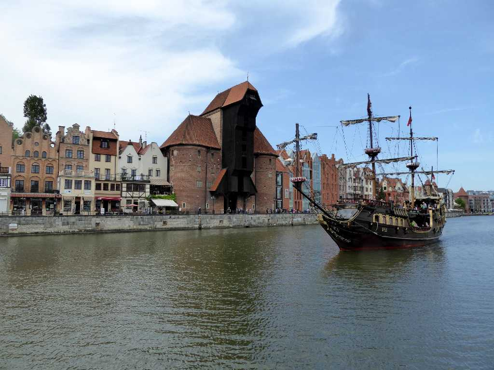
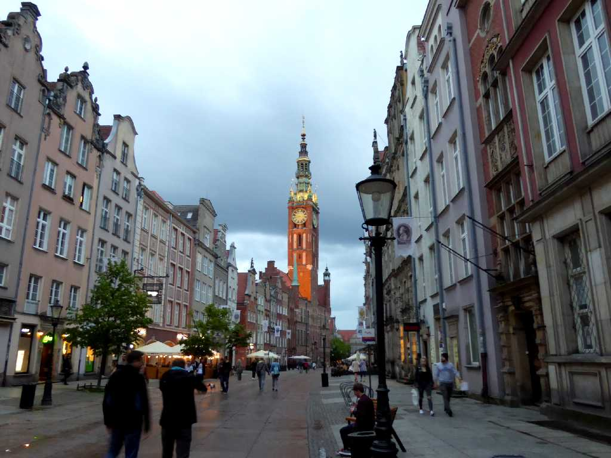
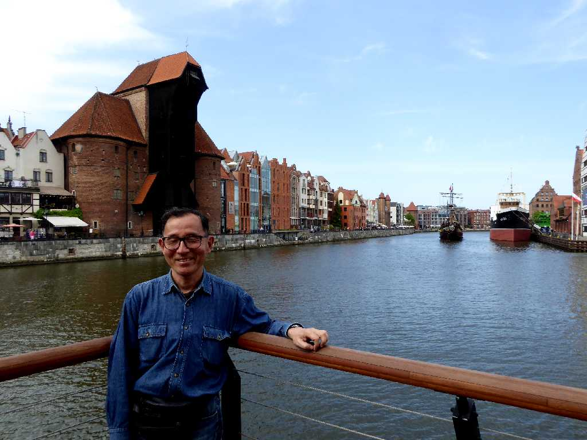

Motlawa River Old Town Gdańsk
バルト海に面するポーランド最大の港湾都市グダニスク

Town hall Old Town Evening View Długa Gdańsk
グタニスク旧市街のメインストリートと市庁舎の夕景
Stocznia Gdańska Gdańsk
１７５０年頃から造船業が発展し東欧諸国の中心的な造船所となり１９８０年には造船所の連帯(独立自主管理労働組合)の委員長ワレサが東欧革命と云われる民主化の扉を開いたグダニスク造船所

Dworzec Główny Gdańsk
グダニスク中央駅

May 21 2019 Old Town